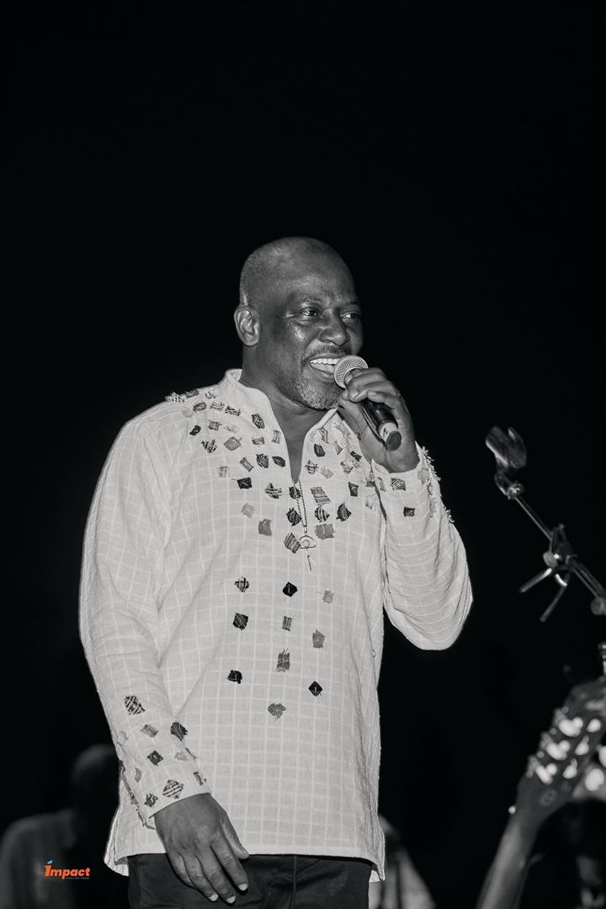
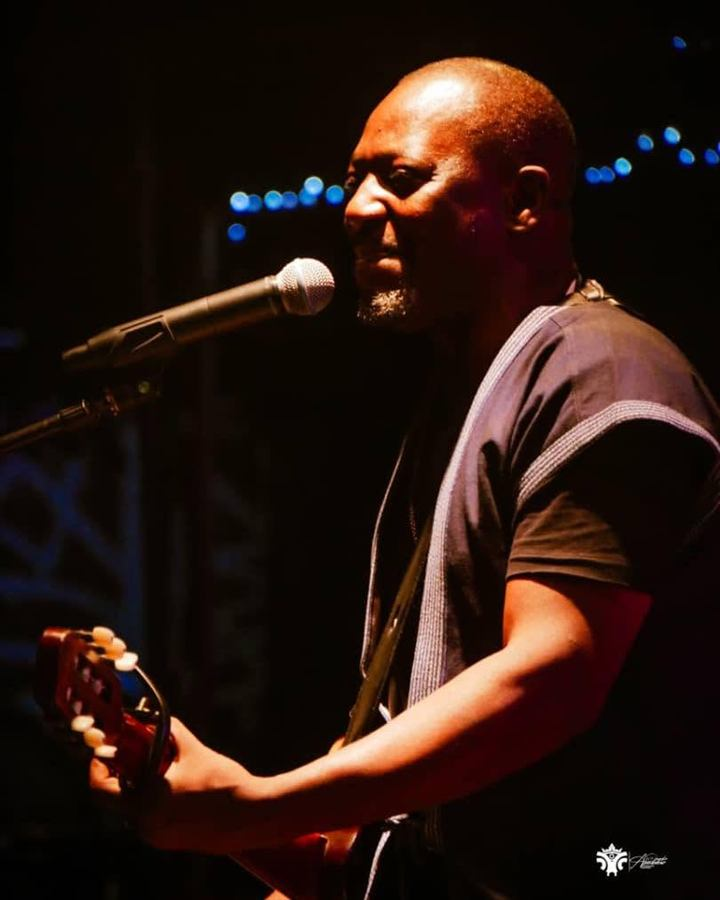
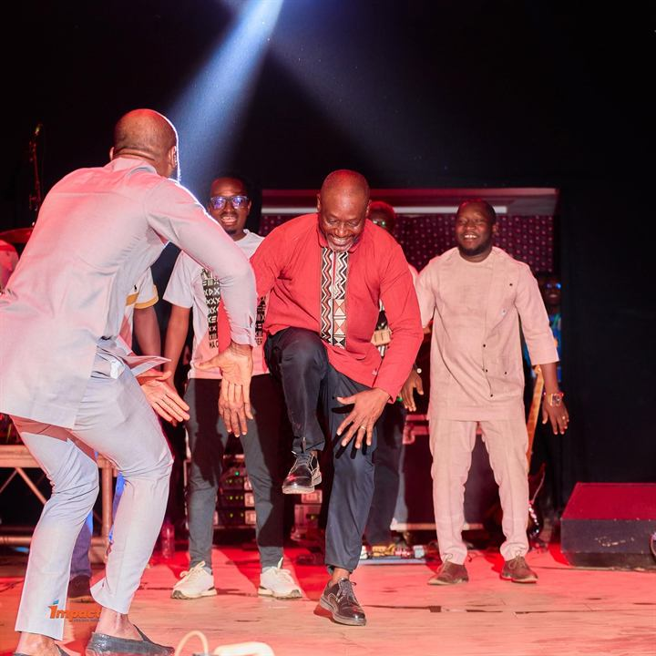
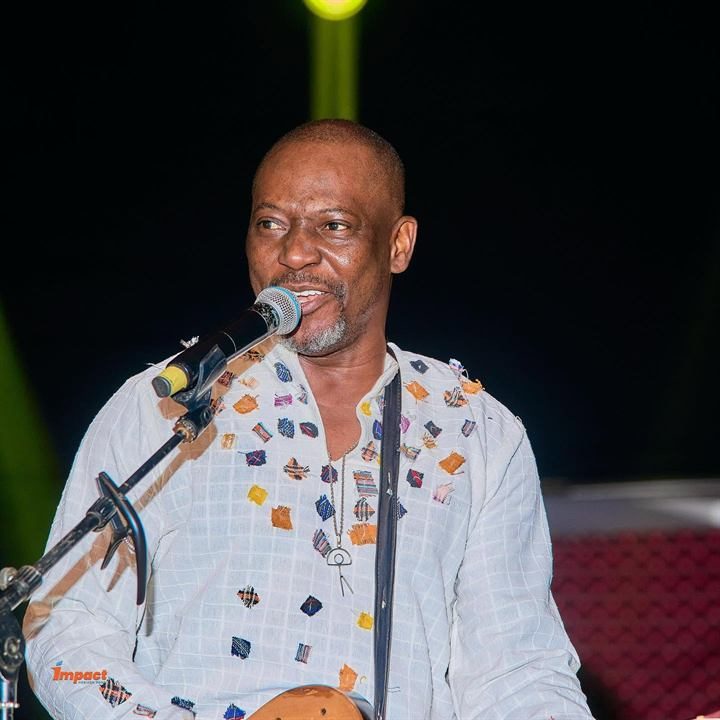
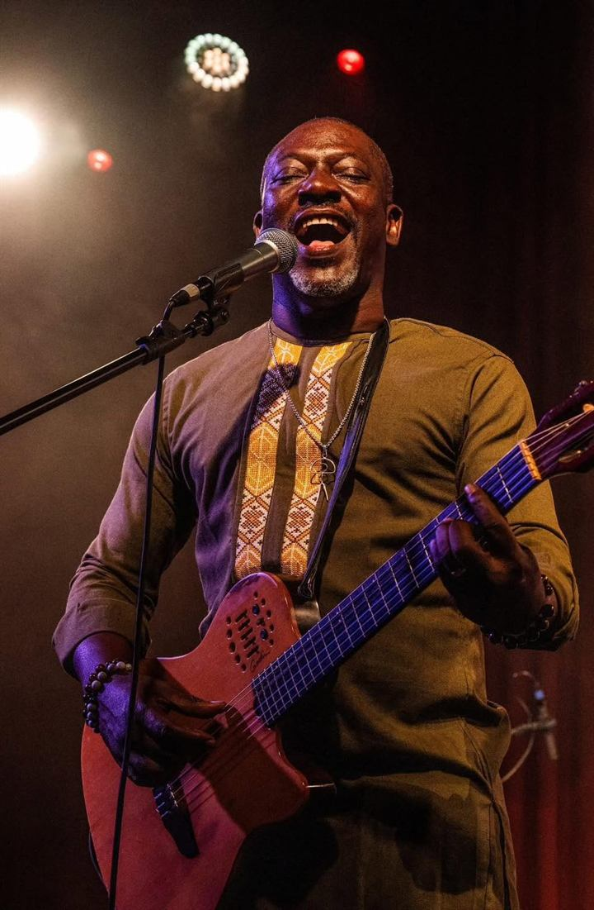
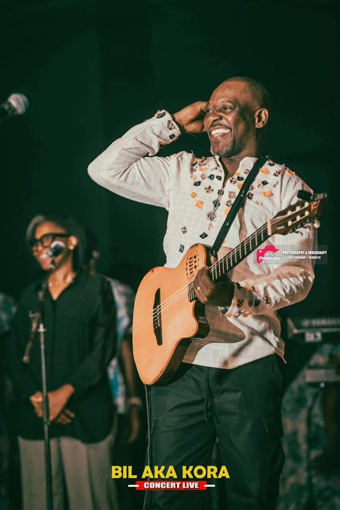
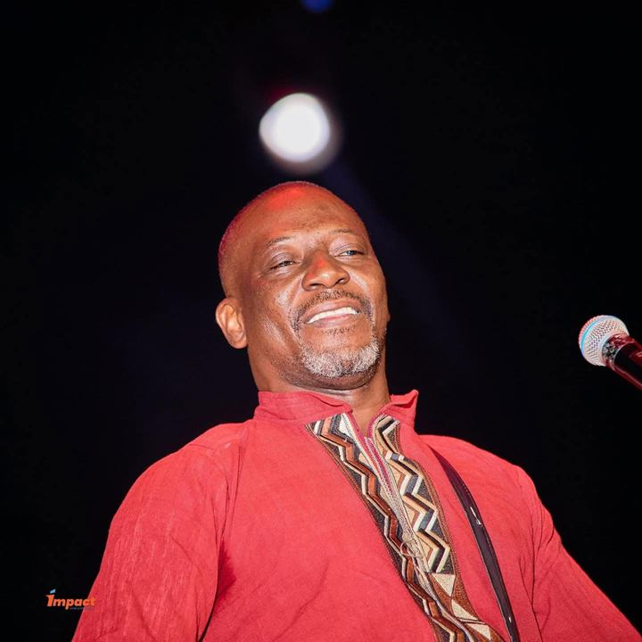
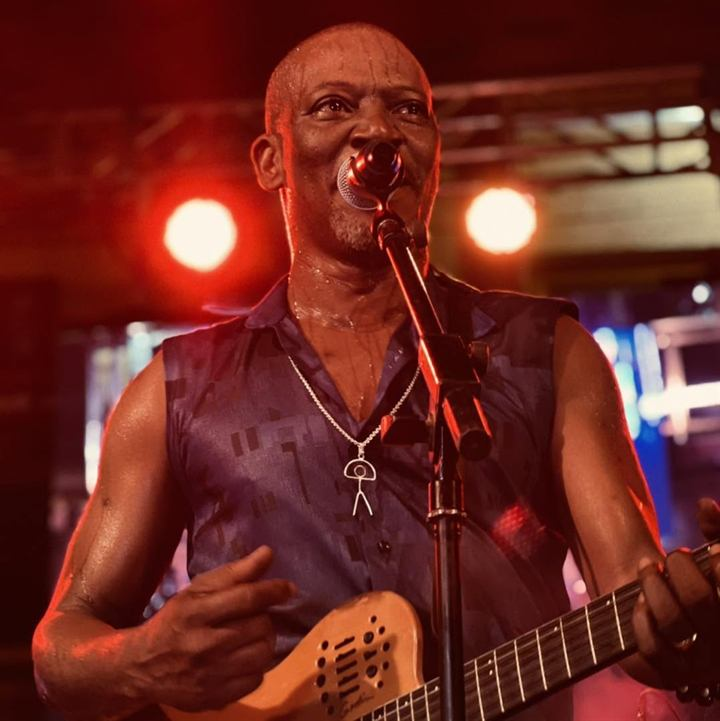
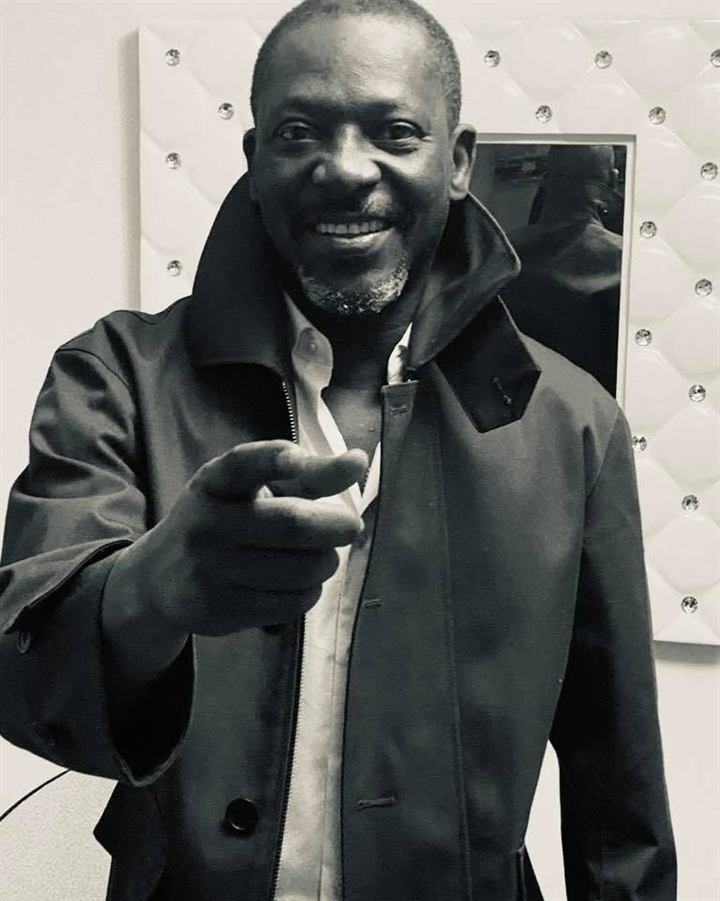

Gallery
On stage and off stage. Tap a photo to enlarge it.
On stage








Photos: Impact Horizon Prod, MFX Photography.
Portraits

Press
High-resolution photos, on request.
In motion
Djongo is also something to watch.
Listen on